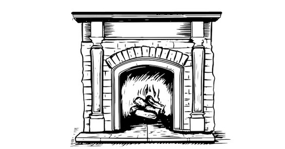

Introduction: Hell Hath No Fury?
The silence was awkward.
I could tell most of the people in our living room were puzzled. Where exactly was I going with this line of questioning?
The twelve of us gathered around the fireplace had become close friends. Tuesday nights were always something to look forward to… not just for the coffee and cookies, but for the chance to exchange ideas on spiritual matters and pray for one another in the chaos of modern life.
"What's your definition of hell?" I asked.
The group hesitated, searching for an acceptable answer.
John spoke first, with his usual confidence. "I think the most accurate definition of hell is eternal separation from God."
He took a slow sip of his mocha-java, the way John Wayne might holster his gun after a clean draw.
My reply came perhaps too quickly. "If that's correct, then David made no sense when he said, 'If I make my bed in hell, behold, you are there.' I believe that's Psalm 139."
Jenny gave it a try next, though less confidently. "Hell might not be a literal place. But whatever, or wherever, it is, I'm certain there'll be intense suffering for those who end up there. And it'll last forever."
Everyone stared into the fire.
The logs popped and hissed.
"If that's true, Jenny," I said, "why would Job, the man who lost everything, say the only home he hopes for is hell? In Job chapter seventeen, verse thirteen, he talks about it as if it's the only light at the end of his tunnel."
Jenny frowned. "Couldn't Job have been speaking poetically? Like when someone says, 'I'd rather have nails drilled into my skull than go to the dentist'?"
"You could make that argument," I conceded. "But most translators have replaced hell with the grave, which is the correct meaning of sheol wherever it appears in Scripture. Job wasn't longing for eternal fire. He was longing for rest, the end of suffering."
I glanced around. "Anyone see it differently?"
Silence. So I pressed on.
"Think of those who rebelled against Moses under Korah's leadership. Scripture says they went to hell ... but the wording's odd. Let me read it."
I turned to the marked passage.
"The earth opened its mouth and swallowed them, with their households and all Korah's men and possessions. They went down alive into the grave with everything they owned; the earth closed over them, and they perished and were gone from the community."
I paused, letting the image settle.
"Chances are they owned livestock, maybe pets. It seems unfair that the animals would burn forever just for belonging to the wrong household. But if sheol means the grave, the passage makes perfect sense. Translating it that way in every Old Testament occurrence would make all those verses line up."
I was on a roll. Why stop now?
"In Psalm 49:15, David says, 'But God will redeem my life from the grave.' If sheol meant hell, then David was expressing confidence that he'd be redeemed from hell, which is strange, since you'd think he'd just hope not to go there in the first place."
Sensing the group's fatigue, I decided to shift gears.
"Let's set definitions aside for a moment," I said. "Are there any babies in hell?"
That woke everyone up.

"Definitely not," came the unanimous chorus.
A few even looked horrified. How could I imagine such a thing?
"Are we not all born sinners?" I asked quietly. "The Bible says everyone is born in sin. So wouldn't that condemn babies too?"
They knew the verse. Romans 3:23.
I tossed another log into the fire, watching the sparks leap.
John wasn't backing down. "You're forgetting about the age of accountability," he said, balancing his mug on one knee. "We're all innocent until we can take responsibility for our choices. Only God knows when that age is. It's different for everyone."
I took a sip of hot chocolate before replying. "John, I'll happily believe that if you can show me where Scripture even hints at an age of accountability."
Silence.
I decided to push further. "Here's a real story," I said, holding up a yellowed clipping. "This happened in the United States."
I smoothed it out. "A woman killed her two children, three months and eighteen months old. Her defense? She believed that if she took their lives before they reached the age of accountability, they'd go straight to heaven. But if she let them grow up, they might make bad life choices, reject Jesus and burn forever."
Gasps filled the room.
"She was convicted of manslaughter, served eight years, remarried, and had another child. A few months later, she killed that baby too. For the exact same reason."
The room was still, except for the crackle of the fire.
John shifted uneasily. Somewhere outside, an ambulance siren wailed.
"Want my take?" I asked. When they nodded, I spoke slowly and deliberately.
"If what traditional Christianity teaches about hell is true, that woman should be rewarded for robbing Satan of three souls. In fact, if we truly believed what we say we do, we'd march into neonatal wards with semiautomatic weapons and send every baby to heaven before they could sin. Hell would be emptier, Satan poorer, and God richer. We'd have robbed them of a few decades on earth, sure. But isn't that worth an eternity of bliss?"
The words hung in the air. One by one, I saw realization dawn on their faces:
their childlike acceptance of the doctrine of hell was riddled with holes.
So let's get straight to it.
One of the more devastating, seldom-spoken myths is that there exists a place called Hell: a place of extreme, everlasting fiery punishment for those who fail to make the right spiritual decision before death.
Until a few years ago, if someone had told me hell wasn't a place of eternal torment, I'd have looked at them with the same suspicion you're probably feeling toward me right now.
That night, as the embers faded to ash, I knew a line had been crossed.
The doctrine I'd defended for decades had collapsed under its own weight.
If eternal conscious torment is true, then the gospel isn't good news —
it's COSMIC BLACKMAIL.
But Jesus never preached blackmail.
He preached love that refuses to fail.
— the one whose Father runs toward prodigals,
who said the Father judges no one,
who spoke of fire that purifies rather than tortures.
We'll expose how the myth of hell crept in,
why it stuck,
and how Jesus dismantled it long before the Church rebuilt it.
You'll find no angry God here.
No eternal furnace disguised as justice.
No threats dressed up as love.
Only the blazing, restorative heart of the Father Jesus came to reveal —
the one whose light still reaches into the places religion called hell.